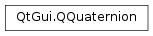

QQuaternion¶
Note
This class was introduced in Qt 4.6.
Synopsis¶
Functions¶
- def
__add__(, q2) - def
__div__(, divisor) - def
__eq__(, q2) - def
__iadd__(quaternion) - def
__idiv__(divisor) - def
__imul__(factor) - def
__imul__(quaternion) - def
__isub__(quaternion) - def
__mul__(, factor) - def
__mul__(, q2) - def
__mul__(factor) - def
__ne__(, q2) - def
__reduce__() - def
__repr__() - def
__sub__() - def
__sub__(, q2) - def
conjugate() - def
conjugated() - def
getAxes(xAxis, yAxis, zAxis) - def
inverted() - def
isIdentity() - def
isNull() - def
length() - def
lengthSquared() - def
normalize() - def
normalized() - def
rotatedVector(vector) - def
scalar() - def
setScalar(scalar) - def
setVector(vector) - def
setVector(x, y, z) - def
setX(x) - def
setY(y) - def
setZ(z) - def
toEulerAngles() - def
toRotationMatrix() - def
toVector4D() - def
vector() - def
x() - def
y() - def
z()
Static functions¶
- def
dotProduct(q1, q2) - def
fromAxes(xAxis, yAxis, zAxis) - def
fromAxisAndAngle(axis, angle) - def
fromAxisAndAngle(x, y, z, angle) - def
fromDirection(direction, up) - def
fromEulerAngles(eulerAngles) - def
fromEulerAngles(pitch, yaw, roll) - def
fromRotationMatrix(rot3x3) - def
nlerp(q1, q2, t) - def
rotationTo(from, to) - def
slerp(q1, q2, t)
Detailed Description¶
The
PySide2.QtGui.QQuaternionclass represents a quaternion consisting of a vector and scalar.Quaternions are used to represent rotations in 3D space, and consist of a 3D rotation axis specified by the x, y, and z coordinates, and a scalar representing the rotation angle.
-
class
PySide2.QtGui.QQuaternion¶ -
class
PySide2.QtGui.QQuaternion(vector) -
class
PySide2.QtGui.QQuaternion(scalar, vector) -
class
PySide2.QtGui.QQuaternion(scalar, xpos, ypos, zpos) Parameters: - xpos –
PySide2.QtCore.float - zpos –
PySide2.QtCore.float - vector –
PySide2.QtGui.QVector4D - scalar –
PySide2.QtCore.float - ypos –
PySide2.QtCore.float
Constructs an identity quaternion (1, 0, 0, 0), i.e. with the vector (0, 0, 0) and scalar 1.
Constructs a quaternion from the components of
vector.Constructs a quaternion vector from the specified
vectorandscalar.Constructs a quaternion with the vector (
xpos,ypos,zpos) andscalar.- xpos –
-
PySide2.QtGui.QQuaternion.__reduce__()¶ Return type: PyObject
-
PySide2.QtGui.QQuaternion.__repr__()¶ Return type: PyObject
-
PySide2.QtGui.QQuaternion.conjugate()¶ Return type: PySide2.QtGui.QQuaternionUse
PySide2.QtGui.QQuaternion.conjugated()instead.
-
PySide2.QtGui.QQuaternion.conjugated()¶ Return type: PySide2.QtGui.QQuaternionReturns the conjugate of this quaternion, which is (-x, -y, -z, scalar).
-
static
PySide2.QtGui.QQuaternion.dotProduct(q1, q2)¶ Parameters: Return type: PySide2.QtCore.floatReturns the dot product of
q1andq2.See also
-
static
PySide2.QtGui.QQuaternion.fromAxes(xAxis, yAxis, zAxis)¶ Parameters: - xAxis –
PySide2.QtGui.QVector3D - yAxis –
PySide2.QtGui.QVector3D - zAxis –
PySide2.QtGui.QVector3D
Return type: Constructs the quaternion using 3 axes (
xAxis,yAxis,zAxis).Note
The axes are assumed to be orthonormal.
- xAxis –
-
static
PySide2.QtGui.QQuaternion.fromAxisAndAngle(x, y, z, angle)¶ Parameters: - x –
PySide2.QtCore.float - y –
PySide2.QtCore.float - z –
PySide2.QtCore.float - angle –
PySide2.QtCore.float
Return type: Creates a normalized quaternion that corresponds to rotating through
angledegrees about the 3D axis (x,y,z).See also
PySide2.QtGui.QQuaternion.getAxisAndAngle()- x –
-
static
PySide2.QtGui.QQuaternion.fromAxisAndAngle(axis, angle) Parameters: - axis –
PySide2.QtGui.QVector3D - angle –
PySide2.QtCore.float
Return type: Creates a normalized quaternion that corresponds to rotating through
angledegrees about the specified 3Daxis.See also
PySide2.QtGui.QQuaternion.getAxisAndAngle()- axis –
-
static
PySide2.QtGui.QQuaternion.fromDirection(direction, up)¶ Parameters: - direction –
PySide2.QtGui.QVector3D - up –
PySide2.QtGui.QVector3D
Return type: Constructs the quaternion using specified forward direction
directionand upward directionup. If the upward direction was not specified or the forward and upward vectors are collinear, a new orthonormal upward direction will be generated.- direction –
-
static
PySide2.QtGui.QQuaternion.fromEulerAngles(eulerAngles)¶ Parameters: eulerAngles – PySide2.QtGui.QVector3DReturn type: PySide2.QtGui.QQuaternionThis is an overloaded function.
Creates a quaternion that corresponds to a rotation of
eulerAngles: eulerAngles.PySide2.QtGui.QQuaternion.z()degrees around the z axis, eulerAngles.PySide2.QtGui.QQuaternion.x()degrees around the x axis, and eulerAngles.PySide2.QtGui.QQuaternion.y()degrees around the y axis (in that order).
-
static
PySide2.QtGui.QQuaternion.fromEulerAngles(pitch, yaw, roll) Parameters: - pitch –
PySide2.QtCore.float - yaw –
PySide2.QtCore.float - roll –
PySide2.QtCore.float
Return type: Creates a quaternion that corresponds to a rotation of
rolldegrees around the z axis,pitchdegrees around the x axis, andyawdegrees around the y axis (in that order).See also
PySide2.QtGui.QQuaternion.getEulerAngles()- pitch –
-
static
PySide2.QtGui.QQuaternion.fromRotationMatrix(rot3x3)¶ Parameters: rot3x3 – PySide2.QtGui.QMatrix3x3Return type: PySide2.QtGui.QQuaternionCreates a quaternion that corresponds to a rotation matrix
rot3x3.Note
If a given rotation matrix is not normalized, the resulting quaternion will contain scaling information.
-
PySide2.QtGui.QQuaternion.getAxes(xAxis, yAxis, zAxis)¶ Parameters: - xAxis –
PySide2.QtGui.QVector3D - yAxis –
PySide2.QtGui.QVector3D - zAxis –
PySide2.QtGui.QVector3D
Returns the 3 orthonormal axes (
xAxis,yAxis,zAxis) defining the quaternion.- xAxis –
-
PySide2.QtGui.QQuaternion.inverted()¶ Return type: PySide2.QtGui.QQuaternionReturns the inverse of this quaternion. If this quaternion is null, then a null quaternion is returned.
-
PySide2.QtGui.QQuaternion.isIdentity()¶ Return type: PySide2.QtCore.boolReturns
trueif the x, y, and z components of this quaternion are set to 0.0, and the scalar component is set to 1.0; otherwise returnsfalse.
-
PySide2.QtGui.QQuaternion.isNull()¶ Return type: PySide2.QtCore.boolReturns
trueif the x, y, z, and scalar components of this quaternion are set to 0.0; otherwise returnsfalse.
-
PySide2.QtGui.QQuaternion.length()¶ Return type: PySide2.QtCore.floatReturns the length of the quaternion. This is also called the “norm”.
-
PySide2.QtGui.QQuaternion.lengthSquared()¶ Return type: PySide2.QtCore.floatReturns the squared length of the quaternion.
-
static
PySide2.QtGui.QQuaternion.nlerp(q1, q2, t)¶ Parameters: - q1 –
PySide2.QtGui.QQuaternion - q2 –
PySide2.QtGui.QQuaternion - t –
PySide2.QtCore.float
Return type: Interpolates along the shortest linear path between the rotational positions
q1andq2. The valuetshould be between 0 and 1, indicating the distance to travel betweenq1andq2. The result will bePySide2.QtGui.QQuaternion.normalized().If
tis less than or equal to 0, thenq1will be returned. Iftis greater than or equal to 1, thenq2will be returned.The function is typically faster than
PySide2.QtGui.QQuaternion.slerp()and will give approximate results to spherical interpolation that are good enough for some applications.See also
- q1 –
-
PySide2.QtGui.QQuaternion.normalize()¶ Normalizes the current quaternion in place. Nothing happens if this is a null quaternion or the length of the quaternion is very close to 1.
-
PySide2.QtGui.QQuaternion.normalized()¶ Return type: PySide2.QtGui.QQuaternionReturns the normalized unit form of this quaternion.
If this quaternion is null, then a null quaternion is returned. If the length of the quaternion is very close to 1, then the quaternion will be returned as-is. Otherwise the normalized form of the quaternion of length 1 will be returned.
-
PySide2.QtGui.QQuaternion.__ne__(q2)¶ Parameters: q2 – PySide2.QtGui.QQuaternionReturn type: PySide2.QtCore.bool
-
PySide2.QtGui.QQuaternion.__mul__(factor)¶ Parameters: factor – PySide2.QtCore.floatReturn type: PySide2.QtGui.QQuaternion
-
PySide2.QtGui.QQuaternion.__mul__(q2) Parameters: q2 – PySide2.QtGui.QQuaternionReturn type: PySide2.QtGui.QQuaternion
-
PySide2.QtGui.QQuaternion.__mul__(factor) Parameters: factor – PySide2.QtCore.floatReturn type: PySide2.QtGui.QQuaternion
-
PySide2.QtGui.QQuaternion.__imul__(quaternion)¶ Parameters: quaternion – PySide2.QtGui.QQuaternionReturn type: PySide2.QtGui.QQuaternionMultiplies this quaternion by
quaternionand returns a reference to this quaternion.
-
PySide2.QtGui.QQuaternion.__imul__(factor) Parameters: factor – PySide2.QtCore.floatReturn type: PySide2.QtGui.QQuaternionMultiplies this quaternion’s components by the given
factor, and returns a reference to this quaternion.See also
PySide2.QtGui.QQuaternion.operator/=()
-
PySide2.QtGui.QQuaternion.__add__(q2)¶ Parameters: q2 – PySide2.QtGui.QQuaternionReturn type: PySide2.QtGui.QQuaternion
-
PySide2.QtGui.QQuaternion.__iadd__(quaternion)¶ Parameters: quaternion – PySide2.QtGui.QQuaternionReturn type: PySide2.QtGui.QQuaternionAdds the given
quaternionto this quaternion and returns a reference to this quaternion.See also
PySide2.QtGui.QQuaternion.operator-=()
-
PySide2.QtGui.QQuaternion.__sub__()¶ Return type: PySide2.QtGui.QQuaternion
-
PySide2.QtGui.QQuaternion.__sub__(q2) Parameters: q2 – PySide2.QtGui.QQuaternionReturn type: PySide2.QtGui.QQuaternionThis is an overloaded function.
Returns a
PySide2.QtGui.QQuaternionobject that is formed by changing the sign of all three components of the givenquaternion.Equivalent to
QQuaternion(0,0,0,0) - quaternion.
-
PySide2.QtGui.QQuaternion.__isub__(quaternion)¶ Parameters: quaternion – PySide2.QtGui.QQuaternionReturn type: PySide2.QtGui.QQuaternionSubtracts the given
quaternionfrom this quaternion and returns a reference to this quaternion.See also
PySide2.QtGui.QQuaternion.operator+=()
-
PySide2.QtGui.QQuaternion.__div__(divisor)¶ Parameters: divisor – PySide2.QtCore.floatReturn type: PySide2.QtGui.QQuaternion
-
PySide2.QtGui.QQuaternion.__idiv__(divisor)¶ Parameters: divisor – PySide2.QtCore.floatReturn type: PySide2.QtGui.QQuaternionDivides this quaternion’s components by the given
divisor, and returns a reference to this quaternion.See also
PySide2.QtGui.QQuaternion.operator*=()
-
PySide2.QtGui.QQuaternion.__eq__(q2)¶ Parameters: q2 – PySide2.QtGui.QQuaternionReturn type: PySide2.QtCore.bool
-
PySide2.QtGui.QQuaternion.rotatedVector(vector)¶ Parameters: vector – PySide2.QtGui.QVector3DReturn type: PySide2.QtGui.QVector3DRotates
vectorwith this quaternion to produce a new vector in 3D space. The following code:QVector3D result = q.rotatedVector(vector);
is equivalent to the following:
QVector3D result = (q * QQuaternion(0, vector) * q.conjugated()).vector();
-
static
PySide2.QtGui.QQuaternion.rotationTo(from, to)¶ Parameters: - from –
PySide2.QtGui.QVector3D - to –
PySide2.QtGui.QVector3D
Return type: Returns the shortest arc quaternion to rotate from the direction described by the vector
fromto the direction described by the vectorto.- from –
-
PySide2.QtGui.QQuaternion.scalar()¶ Return type: PySide2.QtCore.floatReturns the scalar component of this quaternion.
-
PySide2.QtGui.QQuaternion.setScalar(scalar)¶ Parameters: scalar – PySide2.QtCore.floatSets the scalar component of this quaternion to
scalar.
-
PySide2.QtGui.QQuaternion.setVector(vector)¶ Parameters: vector – PySide2.QtGui.QVector3DSets the vector component of this quaternion to
vector.
-
PySide2.QtGui.QQuaternion.setVector(x, y, z) Parameters: - x –
PySide2.QtCore.float - y –
PySide2.QtCore.float - z –
PySide2.QtCore.float
Sets the vector component of this quaternion to (
x,y,z).- x –
-
PySide2.QtGui.QQuaternion.setX(x)¶ Parameters: x – PySide2.QtCore.floatSets the x coordinate of this quaternion’s vector to the given
xcoordinate.
-
PySide2.QtGui.QQuaternion.setY(y)¶ Parameters: y – PySide2.QtCore.floatSets the y coordinate of this quaternion’s vector to the given
ycoordinate.
-
PySide2.QtGui.QQuaternion.setZ(z)¶ Parameters: z – PySide2.QtCore.floatSets the z coordinate of this quaternion’s vector to the given
zcoordinate.
-
static
PySide2.QtGui.QQuaternion.slerp(q1, q2, t)¶ Parameters: - q1 –
PySide2.QtGui.QQuaternion - q2 –
PySide2.QtGui.QQuaternion - t –
PySide2.QtCore.float
Return type: Interpolates along the shortest spherical path between the rotational positions
q1andq2. The valuetshould be between 0 and 1, indicating the spherical distance to travel betweenq1andq2.If
tis less than or equal to 0, thenq1will be returned. Iftis greater than or equal to 1, thenq2will be returned.See also
- q1 –
-
PySide2.QtGui.QQuaternion.toEulerAngles()¶ Return type: PySide2.QtGui.QVector3DThis is an overloaded function.
Calculates roll, pitch, and yaw Euler angles (in degrees) that corresponds to this quaternion.
-
PySide2.QtGui.QQuaternion.toRotationMatrix()¶ Return type: PySide2.QtGui.QMatrix3x3Creates a rotation matrix that corresponds to this quaternion.
Note
If this quaternion is not normalized, the resulting rotation matrix will contain scaling information.
-
PySide2.QtGui.QQuaternion.toVector4D()¶ Return type: PySide2.QtGui.QVector4DReturns this quaternion as a 4D vector.
-
PySide2.QtGui.QQuaternion.vector()¶ Return type: PySide2.QtGui.QVector3DReturns the vector component of this quaternion.
-
PySide2.QtGui.QQuaternion.x()¶ Return type: PySide2.QtCore.floatReturns the x coordinate of this quaternion’s vector.
-
PySide2.QtGui.QQuaternion.y()¶ Return type: PySide2.QtCore.floatReturns the y coordinate of this quaternion’s vector.
-
PySide2.QtGui.QQuaternion.z()¶ Return type: PySide2.QtCore.floatReturns the z coordinate of this quaternion’s vector.
© 2018 The Qt Company Ltd. Documentation contributions included herein are the copyrights of their respective owners. The documentation provided herein is licensed under the terms of the GNU Free Documentation License version 1.3 as published by the Free Software Foundation. Qt and respective logos are trademarks of The Qt Company Ltd. in Finland and/or other countries worldwide. All other trademarks are property of their respective owners.